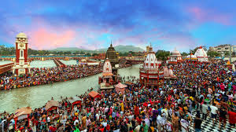
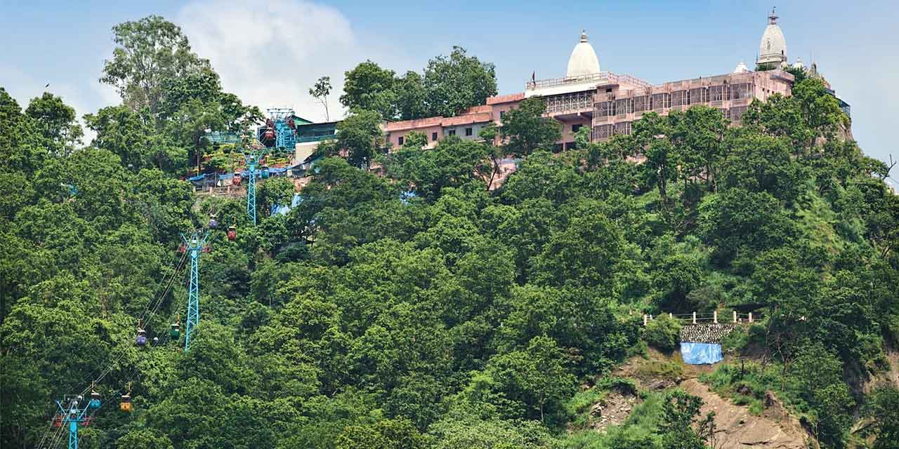
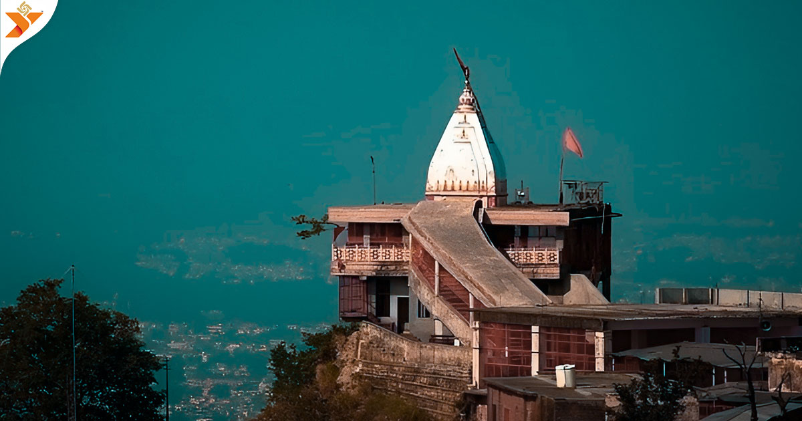
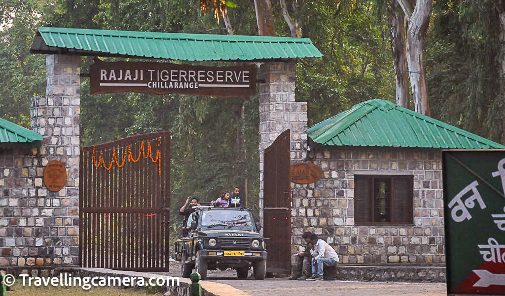

Haridwar is a sacred city on the banks of the Ganges, famous for its ghats, temples, and vibrant spiritual festivals. It attracts pilgrims and tourists alike seeking blessings, religious experiences, and a glimpse of ancient Indian traditions.

Har Ki Pauri is the most revered ghat in Haridwar, known for the spectacular Ganga Aarti every evening. Devotees gather here to take holy dips and witness the ritual of lamps floating on the sacred river, symbolizing purification and blessings.

Situated atop the Bilwa Parvat, Mansa Devi Temple is dedicated to Goddess Mansa, symbolizing power and protection. Visitors often take a cable car ride to reach the temple and enjoy panoramic views of Haridwar and the surrounding hills.

Perched on Neel Parvat, Chandi Devi Temple honors the goddess Chandi. Pilgrims trek or take a cable car to the shrine, where they experience spiritual solace along with breathtaking views of the city and the sacred river Ganges.

Located near Haridwar, Rajaji National Park is a wildlife sanctuary known for elephants, tigers, and diverse flora and fauna. It offers jungle safaris, bird watching, and nature trails for adventure lovers and wildlife enthusiasts.